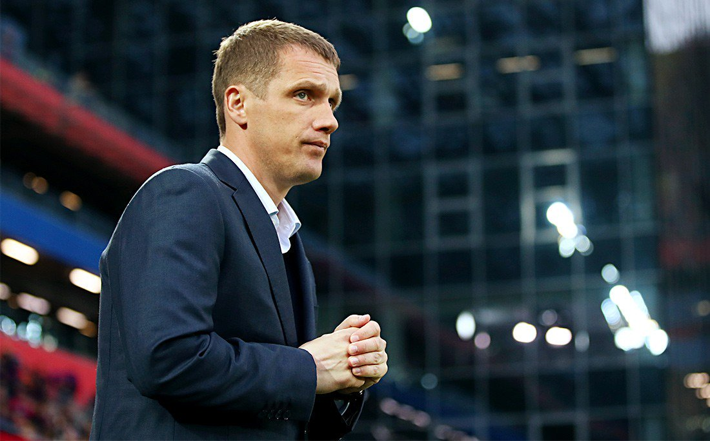
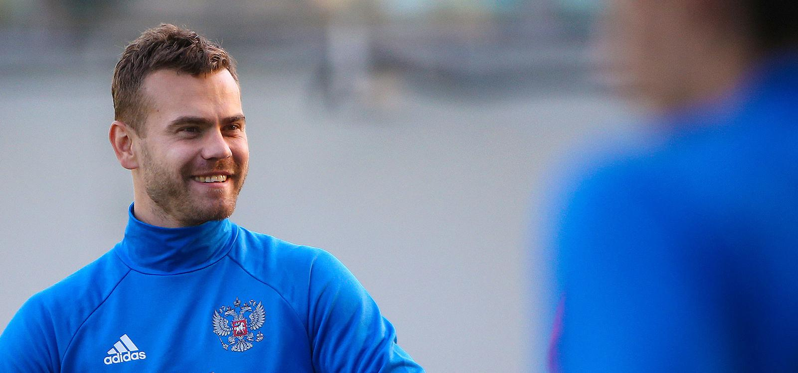
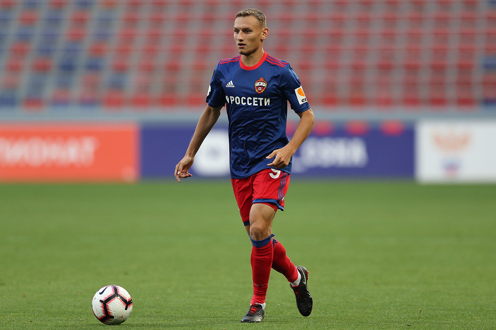
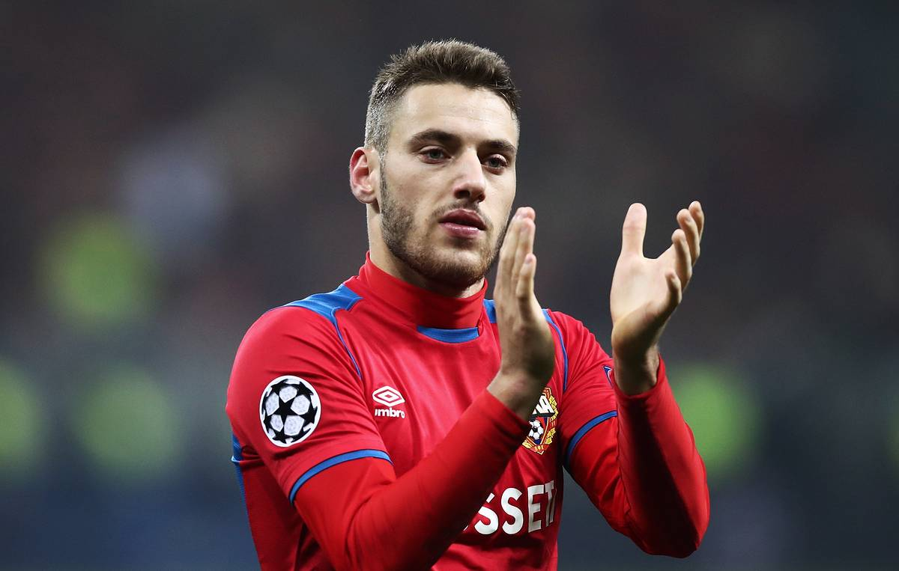
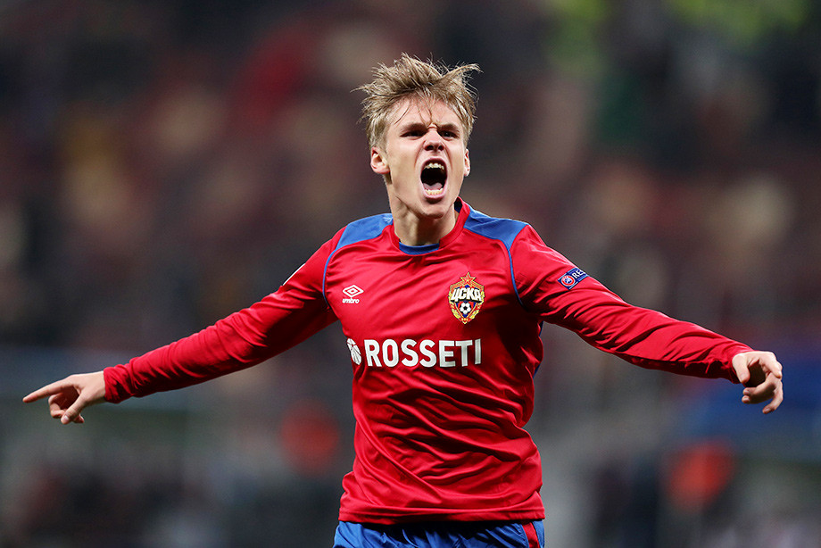
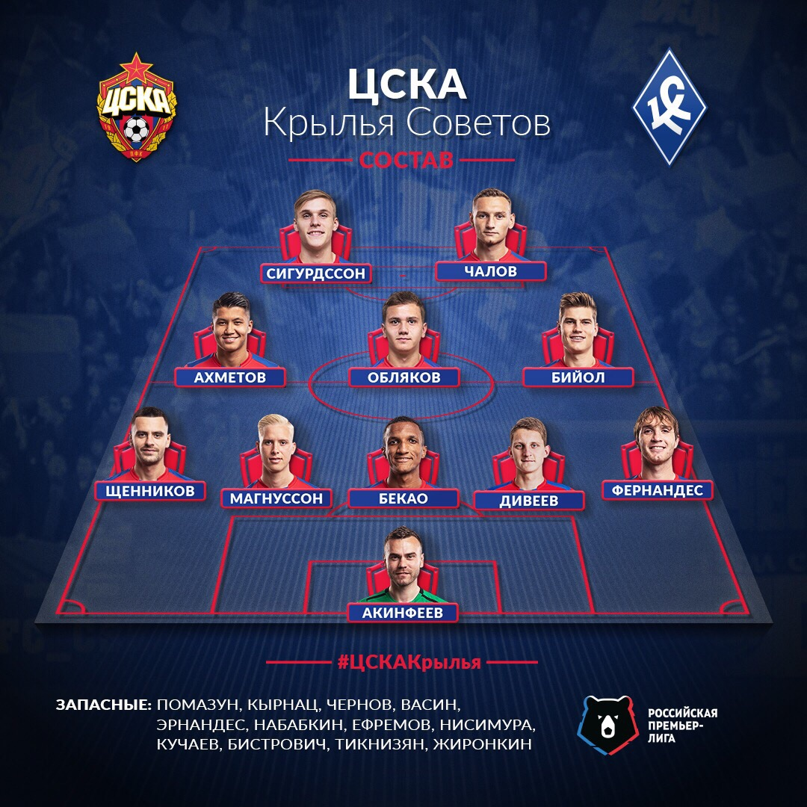
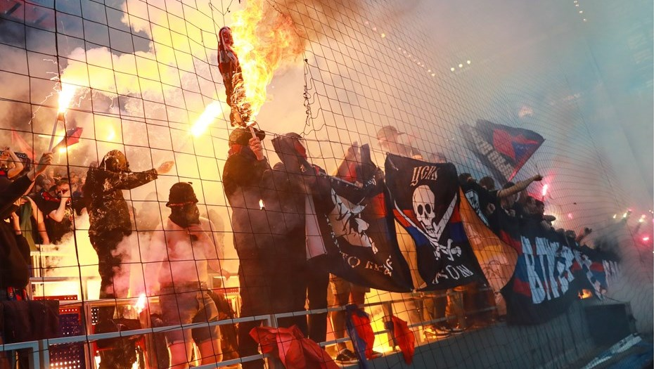
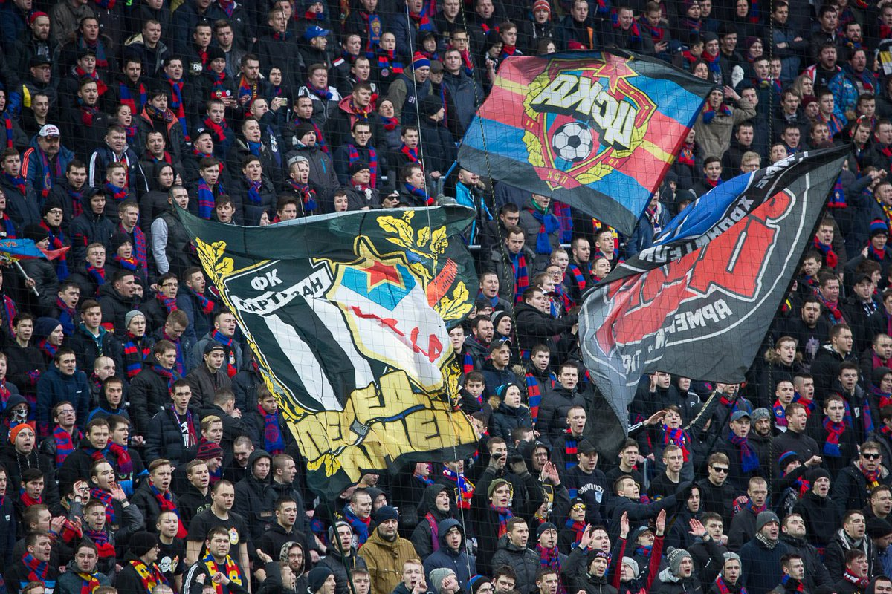
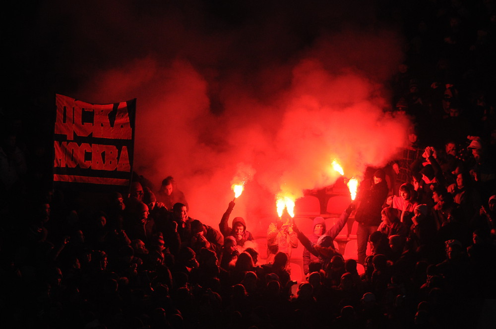
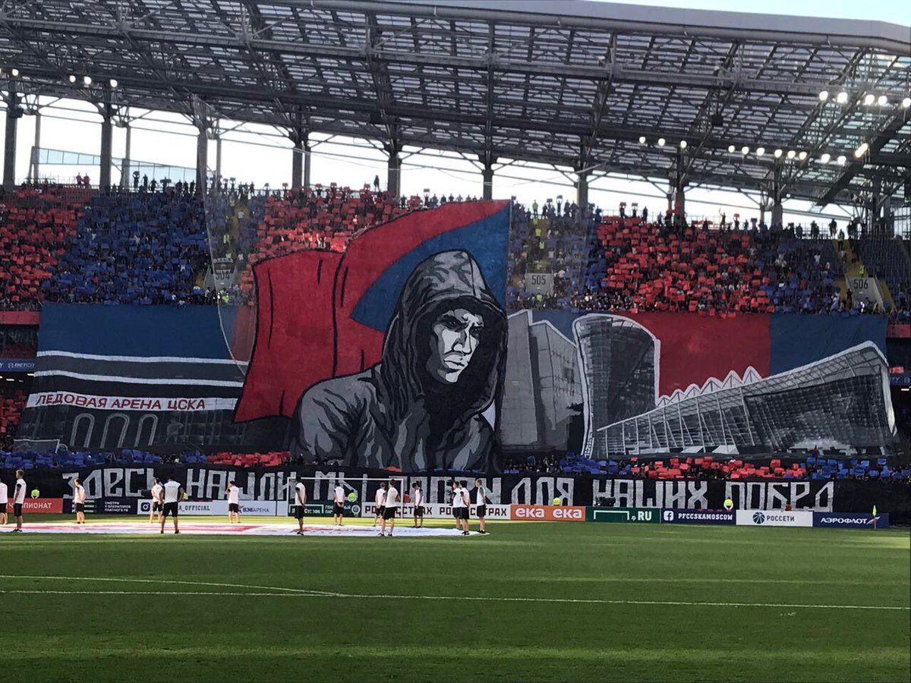

Это главный тренер ЦСКА, Виктор Михайлыч Гончаренко
Это капитан команды - Игорь Акинфеев
Это Федя Чалов, лучший бомбардир РПЛ
Никола Влашич, забил СпартаГу и Реал Мадриду
Арнор Сигурдссон, забил дубль Реалу в ответном матче
Последний состав ЦСКА
Фанаты ЦСКА - The Best
   